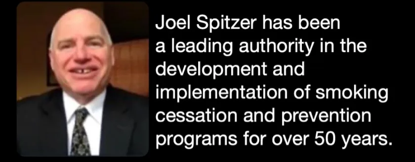

After almost 50 years, Joel Spitzer has retired from all online support.
However, his full archive of educational materials remains free and accessible to anyone wanting to permanently end their addiction.

All of Joel's resources are available here at joelspitzer.org